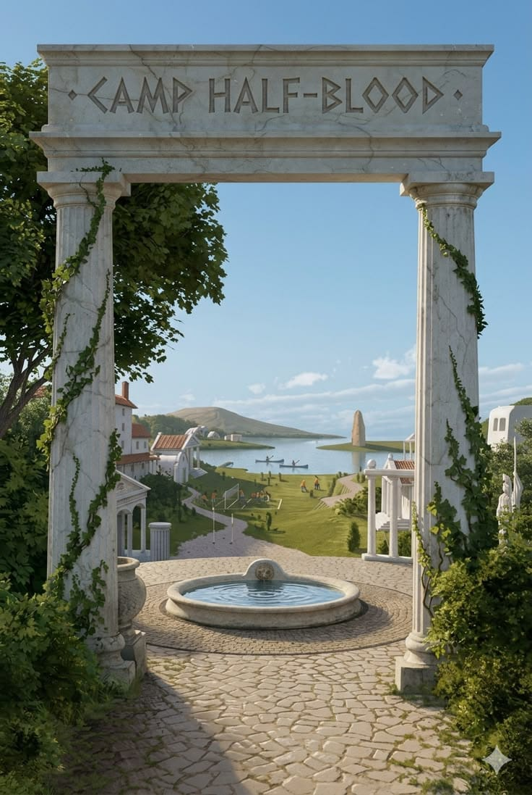

bienvenido al campamento mestizo
despiertas en la casa Grande con un dolor de cabeza y no recuerdas cómo llegaste allí. el señor Dionisio te mira con una sonrisa burlona mientras Quiron te explica que eres un semidios. de repente, un rugido retumba lejos. ¡un Minotauro ha cruzado la barrera magica!